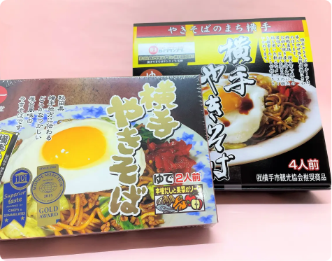

買う
多彩な自然・文化が根付く秋田県には、昔から愛されている銘菓から、かわいいスイーツまで個性豊かなお土産がたくさんあります。
旅の思い出をお持ち帰りするにも、お世話になっている方への贈り物にもぴったりな定番･オススメの商品です。
目次
秋田といえばコレ！定番のお土産10選
上品な甘さが魅力的。秋田銘菓「金萬」
秋田県民から愛されている秋田銘菓の「金萬」。
卵と蜂蜜がたっぷり入ったカステラ生地で白あんを包み、ふっくらと丁寧に焼き上げたお菓子です。ひとつひとつ職人の手で作られています。
パックタイプ･個包装タイプ･生タイプの3種類があり、生タイプは直営店と限られた取扱店限定。
生タイプは賞味期限3日と短いですが、よりしっとりとした生地を楽しめます。
渋谷でも食べられる！
渋谷スクランブルスクエア14階の「ハチふる」では、ここでしか買えないオリジナルの金萬が販売されています。
ハチふる限定の金萬がのっているグリーンティーソフトクリーム。濃厚なソフトクリームと金萬の優しい甘さは相性抜群！
サクサクの食感が一度食べたらやみつきに！「あつみのかりん糖」
かりんとうは、日本全国にあるお菓子ですが、「あつみのかりん糖」はひと味違います！
サクサクとした軽い食感とほんのり感じる塩気、胡麻の風味がアクセントとなり食べ出したら止まらないやみつきになる味。冷蔵庫に入れて冷やして食べるとより美味しくお召し上がりいただけます。
見つけたら絶対買って！
このかりん糖は、夏場は製造していない期間限定商品です。
そのため冬場に入荷されてもすぐに完売してしまうほど。
売っていたら超ラッキー！
ふわふわ食感でほんのり甘い。「バター餅」
バター餅は、北秋田市で40年以上前から食べられている郷土菓子。マタギが狩猟に出る際、保存食として食べられていたそう。
お餅にバターや卵、砂糖を入れているので、時間が経ってもふわふわの柔らかい食感を楽しめます。口の中いっぱいに広がるバターの香りと優しい甘味が絶妙。そのまま生で食べても美味しいですが、焼いて食べてみるのも違った食感を楽しめます。
おつまみにピッタリ！秋田のお漬物「いぶりがっこ」
いぶりがっこは、秋田に古くから伝わる郷土料理のひとつ。大根を天井から吊り下げて、楢や桜の木で燻し、米ぬかなどで漬け込んだお漬物です。
独特の香ばしい燻製の香りとパリパリの食感がクセになる美味しさ。お漬物としてはもちろん、チーズとの相性が良くお酒のおつまみにピッタリです。1本売りのものからカットされているもの、一口サイズにカットし個包装されているものなど種類が豊富なので、贈る相手や用途に合わせて選べます。
つるつるの喉越しと食感が美味しい。「稲庭うどん」
稲庭うどんは、日本三大うどんのひとつ。
約350年前の江戸時代から食べられてきた秋田の伝統的なうどんです。
職人の手作業により手間をかけて作られた麺は、つるつるの喉越しとコシの強さが特徴。
おすすめの食べ方は、ざるうどん。めんつゆで食べるのはもちろん、ごまだれにも合うので是非試してみてくださいね。
秋田といえば！秋田名物「きりたんぽ」
きりたんぽは、つぶしたご飯を杉の棒に巻き付けて焼いたもの。お鍋に入れて食べるのはもちろん、お味噌を付けて焼いても美味しい秋田を代表する特産品。
きりたんぽのほかにも、きりたんぽ鍋用のスープも販売されています。また、お鍋の具材とセットで販売されていることも多いのでお土産におすすめです。
もっと手軽に楽しみたいという方におすすめなのが、お湯を注ぐだけで作れる「きりたんぽカップスープ」。こちらはおやつやランチにもおすすめです。
りんごの名産地･横手市の「りんごジュース」
秋田県南部にある横手市は秋田のりんごの名産地。
そんな横手市の厳選されたりんごをそのまま味わえるりんごジュースは、爽やかな香りと濃厚なりんごの味わいを楽しめます。
冷やして飲んでも美味しいですが、冷凍庫で凍らせてシャーベットにして食べても美味しい！
アルミパックに入っているのでお土産として配りやすいです。
米どころ秋田は日本有数の酒どころ！「日本酒」
自然豊かな秋田県は、綺麗なお水に美味しいお米、厳しい寒さと酒造りにもってこいの環境。そんな秋田県には多くの酒蔵があり、美味しいお酒が盛りだくさん！
30以上ある酒蔵が切磋琢磨しながら醸造した日本酒は辛口から甘口まで、蔵によってさまざまな味わいを楽しめます。
秋田を訪れた際は、是非飲み比べをしながら自分好みの日本酒やお土産用の日本酒を選んでみてください。
かぼちゃあんとバターたっぷりの生地が魅力！「パンプキンパイ」
パンプキンパイは、秋田で30年以上にわたり子供から大人まで幅広い世代に愛され続けているお菓子。
大潟村特産「くり大将」のかぼちゃ餡をバターたっぷりの生地で包んだ甘さ控えめのパイです。ひとつずつ丁寧に手作りされており、しっとりとした生地とかぼちゃ本来の甘さをいかした餡は相性抜群。優しいお味で、おやつにピッタリです。
そのまま食べても美味しいですが、トースターで温めて食べると、バターの香りが引き立ち、かぼちゃの甘味をより感じられます。
秋田を代表するご当地グルメ！「横手やきそば」

ご当地グルメとして全国的に有名な横手やきそば。太くてまっすぐな麺に各店オリジナルの出汁入りソースを絡め、目玉焼きと福神漬けがトッピングされているのが特徴。
モチモチの麺に卵の黄身とソースが絡み、まろやかな甘さが口いっぱいに広がります。
お土産用の横手やきそばは、麺とソースがセットになっているので野菜やお肉を用意するだけでお家で手軽に楽しめます！
贈る相手別おすすめお土産
お子さまにはコレ！「秋田犬ぬいぐるみ」
ふわふわの毛並み、くるんと丸まったしっぽ、ピンと立った三角の耳が愛らしい秋田犬。
そんな秋田犬のぬいぐるみは、思わずぎゅっと抱きしめたくなる可愛さ♪お子さまに喜ばれること間違いなしです！
一緒におでかけしよう！
秋田犬のぬいぐるみがリュックになった大館能代空港限定の「秋田犬ぬいぐるみリュック」もとっても可愛くておすすめです。
友人にはコレ！秋田犬のパッケージが可愛い「もふどら」
秋田犬のもふもふ感を食感で表現した黒糖風味のどら焼き。
味は「つぶあん&マーガリン」と「つぶあん」の2種類。生地には黒糖を使用していて、ふわふわでしっとりとした食感です。
粒あんは甘さ控えめで、粒感があり食べ応え十分。「つぶあん&マーガリン」はマーガリンの塩気と粒あんの相性抜群。
見て楽しい、食べて美味しい「もふどら」は喜ばれること間違いなしです！
クラフトビール好きな方にはコレ！「秋田の地ビール」
秋田は日本酒だけでなく、地ビールも豊富なんです！
秋田県内には「田沢湖ビール」「秋田あくらビール」「湖畔の杜ビール」「羽後麦酒」「BREWCCOLY（ブリュッコリー）」の5つのブルワリーがあります。
各々のブルワリーが秋田県産の原料や農産物を活かしてつくるビールは種類が豊富！飲み比べをしてお気に入りのテイストを探すのも楽しいです。
お料理好きな方にはコレ！「いぶりがっこのクリームチーズマヨ」
細かく刻んだいぶりがっこをクリームチーズとマヨネーズの特製ソースに混ぜ合わせたディップ。
いぶりがっこのスモーキーな風味とカリッとした食感、ソースのコクがやみつきになります。
パンに塗ったり、野菜やクラッカーにディップしたり、揚げ物のソースにしたりと、楽しみ方はいろいろ。
1つあればお料理のバリエーションが広がります。
新しいものが好きな方にはコレ！「KOJICLEAR」
「KOJICLEAR」は、糀を使い、甘酒の製法を進化させた新しい発酵飲料。
糀、米、水の自然由来の原料だけでつくられており、飲む点滴と言われている甘酒の成分に加えクエン酸が入った栄養価の高いドリンク。爽やかな飲み心地が特徴です。朝の目覚めの時間や疲れを感じた時に飲むのがオススメ。そのままでも、アルコールで割ってオリジナルカクテルにしても楽しめます。
秋田のお土産を買うならここ！
欲しいお土産に出会えること間違いなし。「秋田県産品プラザ」
色々あって迷っちゃう！
秋田県内のさまざまな特産品が一同に揃うお土産品の販売店。秋田の食品や地酒から伝統工芸品まで約4,000点の豊富な品揃え。
店内は広く、ゆっくりお買い物を楽しめます。
営業時間：9:00～18:30
アクセス：JR秋田駅より徒歩5分